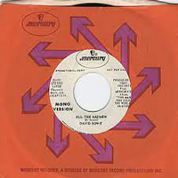
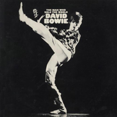
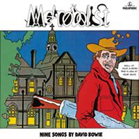

1970 - THE MAN WHO SOLD THE WORLD |
||||
In an early example of Bowie's canny media manipulation, in 1964 he formed the Society For The Prevention of Cruelty to Long-Haired Men and soon found himself (then still trading as Davie Jones) on the BBC's Tonight show, defending his shoulder-length locks with members of his first band, The Manish Boys, in tow. At the start of the 70s - and on the cusp of a revolution in gender experimentation - Bowie, now sporting a curly blond mane reportedly inspired by a Pre-Raphaelite painting by Dante Gabriel Rossetti, posed on a chaise longue in his Haddon Hall home for the cover of The Man Who Sold The World wearing a "man's dress" made by British fashion designer Michael Fish. One of the earliest David Bowie album covers to fall foul of the censors, the artwork was rejected by his US record label, who instead used a cartoon illustration Bowie had originally commissioned - and himself rejected, in favour of the "man's dress" sleeve - from a friend, Michael J Weller. (see below) That design ended up in wider use on the 2020 reissue of the album, which also reverted to using The Man Who Sold The World's original title: Metrobolist. Photographer: Keith MacMillan |
||||
THE WIDTH OF A CIRCLE In the corner of the morning in the past I would sit and blame the master first and last All the roads were straight and narrow And the prayers were small and yellow And the rumour spread that I was aging fast Then I ran across a monster who was sleeping by a tree And I looked and frowned and the monster was me Well, I said, "Hello," and I said, "Hello." And I asked, "Why not?" and I replied, "I don't know." So we asked a simple black bird, who was happy as can be Well, he laughed insane and quipped, "Kahlil Gibran." And I cried for all the others 'til the day was nearly through For I realized that God's a young man too So I said, "So long" and I waved "Bye-bye" And I smashed my soul and traded my mind Got laid by a young bordello Who was vaguely half asleep For which my reputation swept back home in drag And the morals of this magic spell Negotiate my hide When God did take my logic for a ride Riding along He swallowed his pride and puckered his lips Then showed me the leather belt 'round his hips My knees were shaking my cheeks aflame He said, "You'll never go down to the Gods again." (Turn around,go back!) He struck the ground a cavern appeared And I smelt the burning pit of fear We crashed a thousand yards below I said, "Do it again, do it again." (Turn around,go back!) His nebulous body swayed above His tongue swollen with devil's love The snake and I, a venom high I said, "Do it again, do it again." (Turn around, go back!) Breathe, breathe, breathe deeply And I was seething, breathing deeply Spitting sentry, horned and tailed Waiting for you ALL THE MADMEN Day after day They send my friends away To mansions cold and grey To the far side of town Where the thin men stalk the streets While the sane stay underground Day after day They tell me I can go They tell me I can blow To the far side of town Where it's pointless to be high 'Cause it's such a long way down So I tell them that I can fly, I will scream, I will break my arm I will do me harm Here I stand, foot in hand, talking to my wall I'm not quite right at all...am I? Don't set me free, I'm as heavy as can be Just my librium and me And my E.S.T. makes three 'Cause I'd rather stay here With all the madmen Than perish with the sad men roaming free And I'd rather play here With all the madmen For I'm quite content they're all as sane as me (Where can the horizon lie When a nation hides Its organic minds in a cellar...dark and grim They must be very dim) Day after day They take some brain away Then turn my face around To the far side of town And tell me that it's real Then ask me how I feel Here I stand, foot in hand, talking to my wall I'm not quite right at all Don't set me free, I'm as helpless as can be My libido's split on me Gimme some good old lobotomy 'Cause I'd rather stay here With all the madmen Than perish with the sad men Roaming free And I'd rather play here With all the madmen For I'm quite content They're all as sane as me Zane, Zane, Zane Ouvre le Chien Zane, Zane, Zane Ouvre le Chien Zane, Zane, Zane Ouvre le Chien Zane, Zane, Zane Ouvre le Chien BLACK COUNTRY ROCK Pack a pack horse up and rest up here on Black Country Rock You never know, you might find it here on Black Country Rock Pack a pack horse up and rest up here on Black Country Rock You never know, you might find it here on Black Country Rock Some say the view is crazy But you may adopt another point of view So if it's much too hazy You can leave my friend and me with fond "adieu" Pack a pack horse up and rest up here on Black Country Rock You never know, you might find it here on Black Country Rock Pack a pack horse up and rest up here on Black Country Rock Never know, you might find it here on Black Country Rock Some say the view is crazy But you may adopt another point of view So if it's much too hazy You can leave my friend and me with fond "adieu" Some say the view is crazy But you may adopt another point of view So if it's much too hazy You can leave my friend and me with fond "adieu" AFTER ALL Please trip them gently, they don't like to fall Oh by jingo There's no room for anger, we're all very small Oh by jingo We're painting our faces and dressing in thoughts from the skies From paradise But they think that we're holding a secretive ball Won't someone invite them They're just taller children, that's all, after all Man is an obstacle, sad as the clown Oh by jingo So hold on to nothing, and he won't let you down Oh by jingo Some people are marching together and some on their own Quite alone Others are running, the smaller ones crawl But some sit in silence They're just older children, that's all, after all I sing with impertinence, shading impermanent chords With my words I've borrowed your time and I'm sorry I called But the thought just occurred That we're nobody's children at all, after all Live 'til your rebirth and do what you will Oh by jingo Forget all I've said, please bear me no ill Oh by jingo After all, after all RUNNING GUN BLUES I count the corpses on my left, I find I'm not so tidy So I better get away Better make it today I've cut twenty-three down since Friday But I can't control it My face is drawn My instinct still emotes it I slashed them cold, I killed them dead I broke them gooks, I cracked their heads I'll bomb them out from under the beds But now I've got the running gun blues It seems the peaceful stopped the war Left generals squashed and stifled But I'll slip out again tonight 'Cause they haven't taken back my rifle For I promote oblivion And I'll plug a few civilians I'll slash them cold, I'll kill them dead I'll break them gooks, I'll crack their heads I'll slice them 'til they're running red But now I've got the running gun blues I'll slash them cold, I'll kill them dead I'll break them gooks, I'll crack their heads I'll slice them 'til they're running red But now I've got the running gun blues SAVIOUR MACHINE President Joe once had a dream The world held his hand, gave their pledge So he told them his scheme for a Saviour Machine They called it the Prayer, its answer was law Its logic stopped war, gave them food How they adored 'til it cried in its boredom "Please don't believe in me Please disagree with me Life is too easy A plague seems quite feasible now Or maybe a war I may kill you all" Don't let me stay, don't let me stay My logic says, "Burn," so send me away Your minds are too green I despise all I've seen You can't stake your lives on a Saviour Machine I need you flying And I'll show that dying Is living beyond reason, sacred dimension of time I perceive every sign I can steal every mind Don't let me stay, don't let me stay My logic says, "Burn," so send me away Your minds are too green I despise all I've seen You can't stake your lives on a Saviour Machine SHE SHOOK ME COLD We met upon a hill The night was cool and still She sucked my dormant will Mother, she blew my brain I will go back again My God, she shook me cold I had no time to spare I grabbed her golden hair And threw her to the ground Father, she caved my head Oh Lord, the things she said My God, she should be told I was very smart Broke the gentle hearts Of many young virgins I was quick on the ball Left them so lonely They'd just give up trying Then she took my head and Smashed it up Kept my young blood rising Crushed me mercilessly Kept me going around So she don't know I crave her so-o-o I'll give my love in vain To reach that peak again We met upon a hill Mother, she blew my brain I will go back again My God, she shook me cold THE MAN WHO SOLD THE WORLD We passed upon the stair We spoke of was and when Although I wasn't there He said I was his friend Which came as some surprise I spoke into his eyes "I thought you died alone A long long time ago" Oh no, not me I never lost control You're face to face With the man who sold the world I laughed and shook his hand And made my way back home I searched for form and land For years and years I roamed I gazed a gazeless stare At all the millions here We must have died alone A long long time ago Who knows? Not me We never lost control You're face to face With the man who sold the world Who knows? Not me We never lost control You're face to face With the man who sold the world THE SUPERMEN When all the world was very young And mountain magic heavy hung The supermen would walk in file Guardians of a loveless isle And gloomy-browed with superfear their tragic endless lives Could heave nor sigh In solemn, perverse serenity, wondrous beings chained to life Strange games they would play then No death for the perfect men Life rolls into one for them So softly a supergod cries Where all were minds in uni-thought Powers weird by mystics taught No pain, no joy, no power too great Colossal strength to grasp a fate Where sad-eyed mermen tossed in slumbers Nightmare dreams no mortal mind could hold A man would tear his brother's flesh, a chance to die To turn to mold. Far out in the red-sky Far out from the sad eyes Strange, mad celebration So softly a supergod cries Far out in the red-sky Far out from the sad eyes Strange, mad celebration So softly a supergod dies |
||||
SINGLES & ALTERNATIVE COVERS |
||||
   |
||||